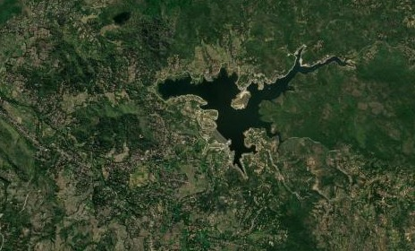
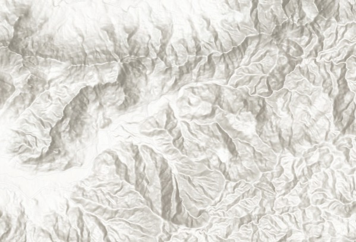

Menu
Cari Lokasi
Legenda & Filter
Bahaya Banjir
Rendah
Sedang
Tinggi
Curah Hujan
2000 - 2500 mm/tahun
2500 - 3000 mm/tahun
Tutupan Lahan
Sungai
Danau/Waduk/Embung
Sawah
Kebun/Perkebunan
Bandar Udara
Tegalan/Ladang
Permukiman
Semak Belukar
Kemiringan Lereng
0 – 8 % (Datar)
8 – 15 % (Landai)
15 – 25 % (Agak Curam)
25 – 40 % (Curam)
> 40 % (Sangat Curam)
Jarak dari Sungai
0 – 25 m (Dekat)
25 – 100 m (Sedang)
100 – 250 m (Jauh)
> 250 m (Sangat Jauh)
Kerapatan Sungai
< 0,62 km/km²
0,62 - 1,44 km/km²
1,44 – 2,27 km/km²
2,27 – 3,10 km/km²
> 3,10 km/km²
Jenis Tanah
Regosol
Ketinggian Lahan
50 - 100 m
100 - 200 m
> 200 m
Kontrol Layer
Bahaya Banjir
Curah Hujan
Tutupan Lahan
Kemiringan Lereng
Jarak dari Sungai
Kerapatan Sungai
Ketinggian Lahan
Jenis Tanah
Batas Desa/Kelurahan
Sungai
 OSM
OSM

Satelit
 Topografi
Topografi

Medan (Relief)
Lintang -
Bujur -
Bujur -
BASEMAP